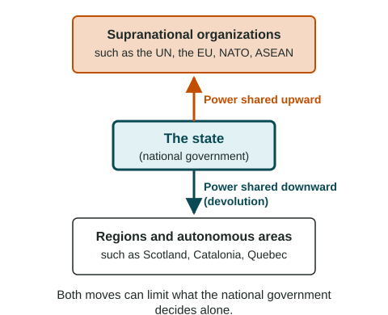

Challenges to Sovereignty
Sovereignty is challenged from below and above.
Part 1 · Hook
Why this matters
Part 2 · Before you start
What this builds on
Part 3 · Prerequisite check
Quick check before you start
1. What is devolution?
- Moving power from the national government to regions
- Moving power from regions to the national government
- Redrawing voting districts
- A state taking land where its people live
Show the answer
Devolution moves power downward.
- Correct: Moving power from the national government to regions:
- Moving power from regions to the national government:
- Redrawing voting districts:
- A state taking land where its people live:
2. What is sovereignty?
- A state's right and power to govern its territory without outside control
- A people's shared culture
- A narrow sea passage
- A region's own parliament
Show the answer
Sovereignty belongs to states.
- Correct: A state's right and power to govern its territory without outside control:
- A people's shared culture:
- A narrow sea passage:
- A region's own parliament:
Part 4 · See it
See it first

Part 5 · Step by step
How it works, step by step
- Some problems cross borders, such as defense, disease, pollution and tradestates join supranational organizations to face them together
- Members agree to shared rules, courts or decisionseach state gives up some sovereignty in return for the gains
- Regions demand more self-rule at the same timepower also moves down to autonomous regions, or a state breaks apart
Part 6 · Key ideas
Key ideas
- Devolution can create autonomous regions or subnational units (Spain, Belgium, Canada's Nunavut, Nigeria's states) or break a state apart (Sudan in 2011, the Soviet Union in 1991). Balkanization is a breakup into smaller, often hostile states.
- Supranationalism is cooperation among three or more states through an organization: the UN, NATO, the EU, ASEAN, the African Union, the Arctic Council. Members give up some sovereignty.
- Communication technology can help devolution, supranational cooperation and democratization, the spread of democratic government.
Part 7 · Misconception
A common mistake
The wrong idea: Every supranational organization limits its members in the same way.
What actually happens: Organizations differ by function. EU members follow shared laws and court rulings; NATO members pledge shared defense; the Arctic Council acts only when all eight states agree, so it limits sovereignty little.
Part 8 · Check yourself
Check yourself
Exam-style questions. Anything you miss goes into your review queue.
Data
What five supranational organizations do
| Organization | Main function | What members agree to |
|---|---|---|
| United Nations (1945) | Peace, security and cooperation among states | To carry out decisions of the Security Council |
| NATO (1949) | Military alliance for shared defense | To treat an armed attack on one member as an attack on all |
| European Union (1993) | Single market, shared laws and, for most members, one currency | To follow EU laws and EU court rulings in shared areas; free movement of people |
| African Union (2002) | Peace, security and development in Africa | That the union may step in to stop genocide or war crimes; a member can be suspended after a coup |
| Arctic Council (1996) | Protecting the Arctic environment and the lives of its peoples | To work by agreement of all eight Arctic states, with Indigenous peoples' groups at the table |
Source: Summarized by LevlPrep from each founding document: UN Charter (1945), North Atlantic Treaty (1949), Treaty on European Union (1992, in force 1993), Ottawa Declaration (1996), Constitutive Act of the African Union (2000).
1. According to the table, which organization exists mainly for shared military defense?
- NATO
- The European Union
- The Arctic Council
- The African Union
Show the answer
Read the "Main function" column: NATO is the military alliance for shared defense.
- Correct: NATO: Right: NATO is a military alliance: an attack on one member counts as an attack on all.
- The European Union: The EU's main functions are its single market and shared laws.
- The Arctic Council: The Arctic Council works on the Arctic environment and its peoples.
- The African Union: The African Union works on peace and development, not a shared army of all members.
2. Which organization in the table asks its members to follow laws made by shared bodies and rulings of a shared court?
- NATO
- The Arctic Council
- The United Nations
- The European Union
Show the answer
The EU goes furthest in pooling sovereignty: in its shared areas, EU law applies in every member state.
- NATO: NATO members agree on shared defense, not shared laws.
- The Arctic Council: The Arctic Council works by agreement of all eight states.
- The United Nations: UN members agree to carry out Security Council decisions, not to follow a body of shared laws.
- Correct: The European Union: Right: EU members follow EU laws and EU court rulings in shared areas.
3. Which organization in the table limits its members' sovereignty the least, according to what members agree to?
- The European Union
- The African Union
- The Arctic Council
- NATO
Show the answer
An organization that acts by agreement of all its members leaves each one able to say no, so it limits sovereignty little.
- The European Union: EU members follow shared laws and court rulings.
- The African Union: The union may step in and can suspend members.
- Correct: The Arctic Council: Right: It works by agreement of all eight states, so each can block a decision.
- NATO: NATO members commit to defend each other.
4. In the 1990s, Yugoslavia broke apart into several smaller states, often after wars between them. What is this process called?
- Balkanization
- Supranationalism
- Democratization
- Reapportionment
Show the answer
Balkanization is the breakup of a region or state into smaller states that are often hostile to each other. It is named for the Balkans in southeastern Europe.
- Correct: Balkanization: Right: The breakup of a region into smaller, often hostile states is named for the Balkans.
- Supranationalism: Supranationalism brings states together; this split one apart.
- Democratization: Democratization is the spread of democratic government.
- Reapportionment: Reapportionment shares out seats in a legislature.
5. When soldiers take power in a coup in an African state, the African Union often suspends that state from the union until elected government returns. How does this affect sovereignty?
- Members accept outside judgment of their rulers
- It makes the suspended state fully independent of the rest of Africa
- It turns the suspended state into a federal state
- It gives the union control of the state's army
Show the answer
Supranational bodies can limit sovereignty: members agree to rules about how they govern, and to penalties when they break them.
- Correct: Members accept outside judgment of their rulers: Right: Joining the union means accepting penalties for breaking its rules.
- It makes the suspended state fully independent of the rest of Africa: Suspension does not change a state's borders or independence.
- It turns the suspended state into a federal state: Suspension does not change a state's form of government.
- It gives the union control of the state's army: The union suspends; it does not take over armies.
6. Which are reasons states join supranational organizations? Select all that apply.
- To deal with problems that cross borders, such as pollution or disease
- To defend each other against attack
- To gain a bigger market for their goods and services
- To gain full control over their own laws
- To redraw their internal voting districts
- To end their membership in the United Nations
Show the answer
States join for security, for larger markets and to face global problems together, and pay for it with some sovereignty.
- Correct: To deal with problems that cross borders, such as pollution or disease: Right: One state cannot clean a shared sea alone.
- Correct: To defend each other against attack: Right: Alliances such as NATO pool defense.
- Correct: To gain a bigger market for their goods and services: Right: A shared market lets firms sell to more people at lower cost.
- To gain full control over their own laws: Joining usually means sharing some lawmaking, not gaining control.
- To redraw their internal voting districts: Voting districts are a national matter.
- To end their membership in the United Nations: Joining other bodies does not end UN membership.
Part 9 · Summary
Summary
Part 10 · Up next
What comes next
Part 11 · Connections